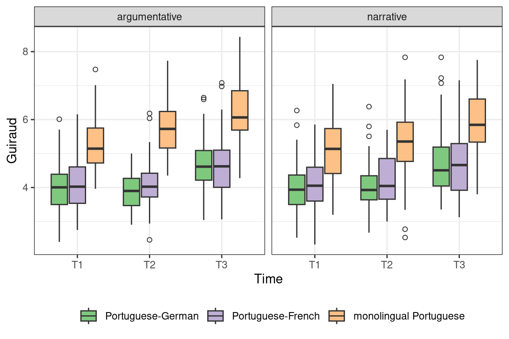
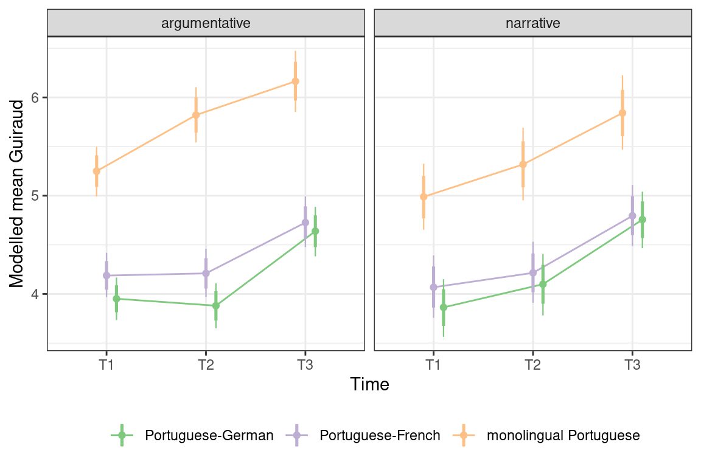
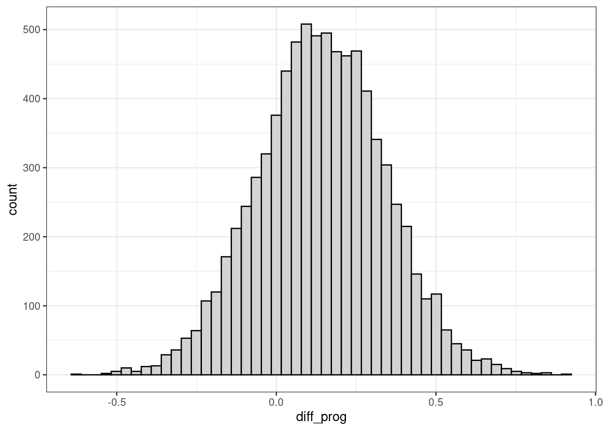

Baby steps in Bayes: Recoding predictors and homing in on specific comparisons
Bayesian statistics
brms
R
graphics
mixed-effects models
contrast coding
Author
Jan Vanhove
Published
December 20, 2018
Interpreting models that take into account a host of possible interactions between predictor variables can be a pain, especially when some of the predictors contain more than two levels. In this post, I show how I went about fitting and then making sense of a multilevel model containing a three-way interaction between its categorical fixed-effect predictors. To this end, I used the brms package, which makes it relatively easy to fit Bayesian models using a notation that hardly differs from the one used in the popular lme4 package. I won’t discuss the Bayesian bit much here (I don’t think it’s too important), and I will instead cover the following points:
How to fit a multilevel model with brms using R’s default way of handling categorical predictors (treatment coding).
How to interpret this model’s fixed parameter estimates.
How to visualise the modelled effects.
How to recode predictors to obtain more useful parameter estimates.
How to extract information from the model to home in on specific comparisons.
The data
For a longitudinal project, 328 children wrote narrative and argumentative texts in Portuguese at three points in time. About a third of the children hailed from Portugal, about a third were children of Portuguese heritage living in the French-speaking part of Switzerland, and about a third were children of Portuguese heritage living in the German-speaking part of Switzerland. Not all children wrote both kinds of texts at all three points in time, and 1,040 texts were retained for the analysis. For each text, we computed the Guiraud index, which is a function of the number of words (tokens) and the number of different words (types) in the texts. Higher values are assumed to reflect greater diversity in vocabulary use.
If you want to know more about this project, check out Bonvin et al. (2018), Lambelet et al. (2017a,b) and Vanhove et al. (2019); you’ll find the references at the bottom of this page.
Update (2023-08-06): I ran all of the R code again with newer software versions when converting the format of this blog.
Read in the data:
# Load tidyverse suitelibrary(tidyverse)# Read in data from my webspaced <-read_csv("http://homeweb.unifr.ch/VanhoveJ/Pub/Data/portuguese_guiraud.csv")# Need to code factors explicitlyd$Group <-factor(d$Group)d$TextType <-factor(d$TextType)d$Time <-factor(d$Time)str(d)
Group Class Child Time
monolingual Portuguese:360 Length:1040 Length:1040 T1:320
Portuguese-French :360 Class :character Class :character T2:340
Portuguese-German :320 Mode :character Mode :character T3:380
TextType Guiraud
argumentative:560 Min. :2.32
narrative :480 1st Qu.:3.93
Median :4.64
Mean :4.75
3rd Qu.:5.48
Max. :8.43
Let’s also plot the data. Incidentally, and contrary to popular belief, I don’t write ggplot code such as this from scratch. What you see is the result of drawing and redrawing (see comments).
# Plot Guiraud scoresggplot(d,aes(x = Time,y = Guiraud,# reorder: sort the Groups by their median Guiraud valuefill =reorder(Group, Guiraud, median))) +# I prefer empty (shape = 1) to filled circles (shape = 16).geom_boxplot(outlier.shape =1) +facet_grid(. ~ TextType) +# The legend name ("Group") seems superfluous, so suppress it;# the default colours contain red and green, which can be hard to# distinguish for some people.scale_fill_brewer(name =element_blank(), type ="qual") +# I prefer the black and white look to the default grey one.theme_bw() +# Put the legend at the bottom rather than on the righttheme(legend.position ="bottom")

Figure 1. The texts’ Guiraud values by time of data collection, text type, and language background.
A multilevel model with treatment coding
Our data are nested: Each child wrote up to 6 texts, and the data were collected in classes, with each child belong to one class. It’s advisable to take such nesting into account since you may end up overestimating your degree of certainty about the results otherwise. I mostly use lme4’s lmer() and glmer() functions to handle such data, but as will become clearer in a minute, brms’s brm() function offers some distinct advantages. So let’s load that package:
library(brms)
Fitting the model
We’ll fit a model with a three-way fixed-effect interaction between Time, TextType and Group as well as with by-Child and by-Class random intercepts. In order to take into account the possibility that children vary in the development of their lexical diversity, we add a random slope of Time by Child, and in order to take into account the possibility that their lexical diversity varies by text type, we do the same for TextType. Similarly, we add by-Class random slopes for Time and TextType.
The output looks pretty similar to what we’d obtain when using lmer(), but let’s review what these estimates actually refer to. By default, R uses treatment coding. This entails that the Intercept refers to a specific combination of factors: the combination of all reference levels. Again by default, the reference levels are chosen alphabetically:
Time consists of three levels (T1, T2, T3); for alphabetical reasons, T1 is chosen as the default reference level.
Group also consists of three levels (monolingual Portuguese, Portuguese-French, Portuguese-German); monolingual Portuguese is chosen as the default level.
TextType consists of two levels (argumentative, narrative); argumentative is the default reference level.
The Intercept, then, shows the modelled mean Guiraud value of argumentative texts written by monolingual Portuguese children at T1: 5.25.
If you’re unsure which factor level was used as the reference level, you can use the contrasts() function. The reference level is the one in whose rows only zeroes occur.
Crucially, all other estimated effects are computed with respect to this intercept. That is, TimeT2 (0.57) shows the difference between T1 and T2 for monolingual Portuguese children writing argumentative texts. Similarly, TimeT3 (0.91) shows the difference between T1 and T3 for monolingual Portuguese children writing argumentative texts, and TextTypenarrative (-0.27) shows the difference between the mean Guiraud values of argumentative and narrative texts written by monolingual Portuguese children writing at T1. The texts written by the Portuguese-German and Portuguese-French bilinguals don’t enter into these estimates.
Now, it’s possible to piece together the mean values associated with each combination of predictor values, but questions such as the following remain difficult to answer with just these estimates at hand:
What’s the overall difference between T2 and T3 and its uncertainty?
What’s the overall difference between the Guiraud values of texts written by Portuguese-French and Portuguese-German children and its uncertainty?
…
We’ll tackle these questions in a minute; for now, the point is merely that the estimated parameters above all refer to highly specific comparisons that may not be the most relevant.
Plotting the fitted values and the uncertainty about them
When working with brms, it’s relatively easy to obtain the modelled average outcome value for each combination of the predictor variables as well as a measure of the uncertainty associated with them.
First construct a small data frame containing the unique combinations of predictor variables in our dataset:
d_pred <- d |>select(Group, Time, TextType) |>distinct() |>arrange(Group, Time, TextType)d_pred
# A tibble: 18 × 3
Group Time TextType
<fct> <fct> <fct>
1 monolingual Portuguese T1 argumentative
2 monolingual Portuguese T1 narrative
3 monolingual Portuguese T2 argumentative
4 monolingual Portuguese T2 narrative
5 monolingual Portuguese T3 argumentative
6 monolingual Portuguese T3 narrative
7 Portuguese-French T1 argumentative
8 Portuguese-French T1 narrative
9 Portuguese-French T2 argumentative
10 Portuguese-French T2 narrative
11 Portuguese-French T3 argumentative
12 Portuguese-French T3 narrative
13 Portuguese-German T1 argumentative
14 Portuguese-German T1 narrative
15 Portuguese-German T2 argumentative
16 Portuguese-German T2 narrative
17 Portuguese-German T3 argumentative
18 Portuguese-German T3 narrative
If you feed the model (here: m_default) and the data frame we’ve just created (d_pred) to the fitted() function, it outputs the modelled mean estimate for each combination of predictor values (Estimate), the estimated error of this mean estimate (Est.Error), and a 95% uncertainty interval about the estimate (Q2.5 and Q97.5). One more thing: The re_formula = NA line specifies that we do not want the variability associated with the by-Class and by-Child random effects to affect the estimates and their uncertainty. This is what I typically want.
So where do these estimates and uncertainty intervals come from? In the Bayesian approach, every model parameter hasn’t got just one estimate but an entire distribution of estimates. Moreover, everything that depends on model parameters also has an entire distribution of estimates associated with it. The mean modelled outcome values per cell depend on the model parameters, so they, too, have entire distributions associated with them. The fitted() function summarises these distributions for us: it returns their means as Estimate, their standard deviations as Est.Error and their 2.5th and 97.5 percentiles as Q2.5 and Q97.5. If so inclined, you can generate these distributions yourself using the posterior_linpred() function:
This returns matrix of 4000 rows and 18 columns. 4000 is the number of ‘post-warmup samples’ (see the output of summary(m_default); 18 is the number of combinations of predictor values in d_pred.
The first column of posterior_fit contains the distribution associated with the first row in d_pred. If you compute its mean, standard deviation and 2.5th and 97.5th percentiles, you end up with the same numbers as above:
At the moment, using posterior_linpred() has no added value, but it’s good to know where these numbers come from.
Let’s draw a graph showing these modelled averages and the uncertainty about them. 95% uncertainty intervals are typically used, but they may instill dichotomous thinking. To highlight that such an interval highlights but two points on a continuum, I’m tempted to add 80% intervals as well:
# Obtain fitted values + uncertaintyfitted_values <-fitted(m_default, newdata = d_pred, re_formula =NA, # 95% interval: between 2.5th and 97.5th percentile# 80% interval: between 10th and 90th percentileprobs =c(0.025, 0.10, 0.90, 0.975))# Combine fitted values with predictor valuesfitted_values <-cbind(d_pred, fitted_values)fitted_values
# Move all points apart horizontally to reduce overlapposition_adjustment <-position_dodge(width =0.3)ggplot(fitted_values,aes(x = Time,y = Estimate,# Sort Groups from low to highcolour =reorder(Group, Estimate),group = Group)) +# Move point apart:geom_point(position = position_adjustment) +# Move lines apart:geom_path(position = position_adjustment) +# Add 95% intervals; move them apart, toogeom_linerange(aes(ymin = Q2.5, ymax = Q97.5), linewidth =0.4,position = position_adjustment) +# Add 80% intervals; move them apart, toogeom_linerange(aes(ymin = Q10, ymax = Q90), linewidth =0.9,position = position_adjustment) +facet_wrap(~ TextType) +# Override default colourscale_colour_brewer(name =element_blank(), type ="qual") +ylab("Modelled mean Guiraud") +theme_bw() +theme(legend.position ="bottom")

Figure 2. The modelled mean Guiraud values and their uncertainty (thick vertical lines: 80% interval; thin vertical lines: 95% interval).
A model with more sensible coding
Tailoring the coding of categorical predictors to the research questions
The summary() output for m_default was difficult to interpret because treatment coding was used. However, we can override this default behaviour to end up with estimates that are more readily and more usefully interpretable.
The first thing we can do is to override the default refence level. Figure 1 showed that the Guiraud values at T2 tend to be somewhere midway between those at T1 and T3, so we can make the intercept estimate more representative of the dataset as a whole by making T2 the reference level of Time rather than T1. A benefit of doing so is that we will now have two parameters, TimeT1 and TimeT3 that specify the difference between T1-T2 and T2-T3, respectively. In other words, the estimated parameters will directly reflect the progression from data collection to data collection. (Before, the parameter estimates specified the differences between T1-T2 and T1-T3, so a direct estimate for T2-T3 was lacking.)
# Set T2 as default time; retain treatment codingd$Time <-relevel(d$Time, "T2")
Second, there’s no reason for preferring argumentative or narrative texts as the reference level. If we sum-code this predictor, the intercept reflects the grand mean of the argumentative and narrative texts (at T2), and the estimated parameter then specifies how far the mean Guiraud value of each text type is removed from this mean:
# Sum (or deviation) coding for TextType (2 levels)contrasts(d$TextType) <-contr.sum(2)
Similarly, there are a couple of reasonable ways to choose the reference level for Group when using treatment coding. But you can also sum-code this predictor so that the intercept reflects the grand mean of the Guiraud values of texts written by monolingual Portuguese and bilingual Portuguese-French and Portuguese-German kids (at T2).
# Sum (or deviation) coding for Group (3 levels)contrasts(d$Group) <-contr.sum(3)
Now the Intercept reflects the grand mean of the Guiraud values for both argumentative and narrative texts for all three groups written at T2. The TimeT1 estimate (-0.20) shows the difference between T1 and T2 averaged over all text types and all groups (0.20 points worse at T1); the TimeT3 estimate (0.56) shows the difference between T2 and T3 averaged over all text types and all groups (0.56 points better at T3).
TextType1 (0.05) shows that the mean Guiraud value of one text type (still written at T2!) averaged over all groups is 0.05 points higher than the grand mean; and by implication that the mean Guiraud value of the other text type is 0.05 lower than the grand mean. To find out which text type is which, use contrasts():
contrasts(d$TextType)
[,1]
argumentative 1
narrative -1
Since argumentative is coded as 1, it’s the argumentative texts that have the higher Guiraud values at T2.
Similarly, Group1 (0.98) shows that one group has higher-than-average Guiraud values averaged across text types at T2, whereas Group2 (-0.38) shows that another group has a mean Guiraud value that lies 0.38 points below the average at T2. By implication, the third group’s mean Guiraud value lies 0.60 points below average ((0.98-0.38-0.60)/3 = 0). To see which group is which, use contrasts():
I won’t plot the modelled averages and their uncertainty, because the result will be the same as before: Recoding the predictors in this way doesn’t affect the modelled averages per cell; it just makes the summary output easier to parse.
Homing in on specific comparisons
Finally, let’s see how we can target some specific comparisons without having to refit the model several times. A specific comparison you might be interested in could be “How large is the difference in Guiraud scores for narrative texts written by Portuguese-French bilinguals between T1 and T2?” Or a more complicated one: “How large is the difference in the progression from T1 to T3 for argumentative texts between Portuguese-French and Portuguese-German children?”
To answer such questions, we need to generate the distribution of the modelled averages per predictor value combination:
Question 1: Progression T1-T2 for narrative texts, Portuguese-French bilinguals?
This question requires us to compare the modelled average for narrative texts written by Portuguese-French bilinguals at T2 to that of the narrative texts written by Portuguese-French bilinguals at T1. The first combination of predictor values can be found in row 10 in d_pred, so the corresponding estimates are in column 10 in posterior_fit. The second combination of predictor values can be found in row 8 in d_pred, so the corresponding estimates are in column 8 in posterior_fit.
Figure 3. Estimate of the progression in Guiraud values for narrative texts by Portuguese-French bilinguals from T1 to T2.
The mean progression is easily calculated:
mean(df$progression)
[1] 0.148
The estimated error for this estimate is:
sd(df$progression)
[1] 0.149
And its 95% uncertainty interval is:
quantile(df$progression, probs =c(0.025, 0.975))
2.5% 97.5%
-0.152 0.436
According to the model, there’s about a 84% chance that there’s indeed some progression going from T1 to T2.
mean(df$progression >0)
[1] 0.845
Question 2: T1-T3 progression for argumentative texts, Portuguese-French vs. Portuguese-German?
This question requires us to take into consideration the modelled average for argumentative texts written by Portuguese-French bilinguals at T1, that for argumentative texts written by Portuguese-French bilinguals at T3, and the same for the texts written by Portuguese-German bilinguals. We need the following columns in posterior_fit:
We compute the progression for the Portuguese-French bilinguals and that for the Portuguese-German bilinguals. Then we compute the difference between these progressions:
The mean progression for the Portuguese-French bilinguals was 0.54 compared to 0.68 for the Portuguese-German bilinguals:
mean(df$prog_fr)
[1] 0.542
mean(df$prog_gm)
[1] 0.684
The mean difference between these progressions, then, is 0.14 in favour of the Portuguese-German bilinguals:
mean(df$diff_prog)
[1] 0.142
However, there is considerable uncertainty about this difference:
ggplot(df,aes(x = diff_prog)) +geom_histogram(bins =50, fill ="lightgrey", colour ="black") +theme_bw()

The probability that the Portuguese-German bilinguals make more progress than the Portuguese-French bilinguals is 77%, and according to the model, there’s a 95% chance its size is somewhere between -0.25 and 0.52 points.
mean(df$diff_prog >0)
[1] 0.768
quantile(df$diff_prog, probs =c(0.025, 0.975))
2.5% 97.5%
-0.251 0.530
Summary
By investing some time in recoding your predictors, you can make the parameter estimates more relevant to your questions. Any specific comparisons you may be interested in can additionally be addressed by making use of the entire distribution of estimates. You can also use these estimate distributions to draw effect plots.
In simpler models, you can use bootstrapping to generate distributions of estimates. This would be possible for these data, too, but it would take a considerable amount of time.